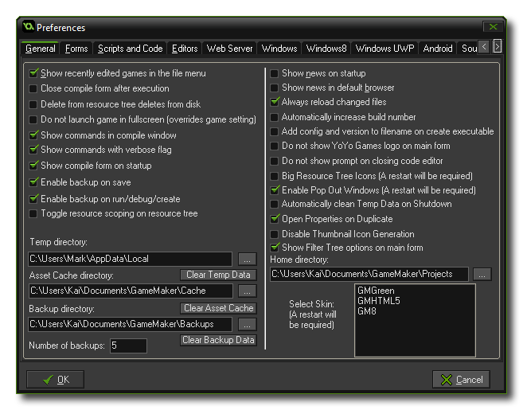

 The General
Preferences tab deals with the visual aspect of GameMaker:
Studio as well as certain general behaviours. The following
options are available:
- Show recently edited games in the file menu: If checked the eight most recently edited games are shown under the recent files in the file menu.
- Close compile form after execution: When you run your game, it is compiled by GameMaker: Studio to run on the target platform, and this process is shown in the compile window. Normally this window is always open (and can be docked at the bottom of the main window), but you may wish to only see it when only when compiling, in which case you should tick this option as it will automatically close the compile window when finished.
- Delete from resource tree deletes from disk: If this option is checked, when you remove a resource from the resource tree, it will also be removed from the computer. Use with caution! This may lead to the accidental loss of resources.
- Do not launch game in fullscreen: When checked, this option will override any other fullscreen functions when you launch your game and force it to start windowed. This is provided as a debug tool.
- Show commands in compile window: When you create a new final app or are testing the current one (normally or in debug mode) the compile window will show the currently running commands. Un checking this flag will switch off most of them and prevent the compile form from showing what is being done. The default (and recommended) value is to have this switched on.
- Show commands with verbose flag: This check-box is used to switch on (or off) verbose messages in the compile window. When switched on, the default command messages that are shown in the compile window (when the above "Show commands in compile window" is checked too) will contain far more information about the current status of the app being compiled. This may slow down the app as it runs and is flagged as off by default.
- Show compile form on startup: Flagging this will open the compile form automatically when you start GameMaker: Studio. If it is not flagged, then the compile form will only appear when you first test your game or when you create the final executable.
- Enable backup on save: This option can be used to switch on the automatic backups that GameMaker: Studio can make of your project. When this is enabled, you can select a Backup Directory to save a full backup copy of the current project too, as well as the Number of backups that you wish to keep. Once this is enabled, every time you save the current project you will also have a backup copy saved to the chosen directory. These backups are numbered concurrently, starting at 0. Please note that the current (newest) backup is always the first! Each time you save, previous backups are re-numbered with an increment of one (removing those that are numbered larger than the specified number of backups) and the latest save is numbered as 0.
- Enable backup on run/debug/create: As above, only this will enable or disable the creation of backups when you run the game normally or in debug mode, or when you create a final executable.
- Toggle resource scoping on resource tree: When you use F12 (or the middle mouse button) on a resource in your code, it will jump to that resource in the editor and then open its properties window. However if you don't want the currently selected resource to change when you use this action, you can disable this option, and only the properties window will open for the selected resource while the scopewill not change in the resource tree.
- Directories: You can set the different directories that GameMaker: Studio will use to save the asset cache, the temp files and any backups of your projects. Note that each of the given directories also has a "Clear..." button which will wipe all the accumulated data from the given folder.
- Show news on startup: Sets whether to show the GameMaker: Studio news when you start the program.
- Show news in default browser: Sets whether to display the GameMaker: Studio news in your default Internet browser, rather than in the program itself.
- Always reload changed files: This option is to permit GameMaker: Studio to reload files that are changed on the disc automatically. If this is flagged, then any images, sounds or scripts that are changed from the project *.gmx file itself will be silently re-loaded into your game. if it is not flagged, you will get a message prompt asking you if you wish to change the files.
- Automatically increase build number: When checked the build number will increase automatically.
- Automatically add build number and date constants: When checked, the internal constants for build number and version ( GM_build_date and GM_version) will be increased automatically. This option will switch these off as they may interfere with any SVN solutions that you are using.
- Add config and version to filename on create executable: Flagging this will generate a build number (including config name, if configs are used) automatically when you create an executable of your game.
- Do not show YoYo Games Logo in the main window: When checked the image and link to the YoYo Games website in the main window are not shown.
- Do not show prompt on closing code editor: Flagging this option will prevent the code or script editor asking you if you wish to save any changes and instead will silently save on close always. The default (and recommended) setting for this is to have it switched off.
- Big resource tree icons: Checking this will make all the resource tree icons larger (GameMaker: Studio must be restarted for this to show).
- Enable Pop Out Windows: Checking this will permit you to drag the component windows out of the main IDE and position them elsewhere (useful if you have more than one monitor).
- Automatically Clean Temp Data On Shutdown: Checking this will force GameMaker: Studio to automatically clean any temp folders when the IDE is closed.
- Automatically clear Temp Data on shutdown: This option will clear the Temp Data folder every time you close GameMaker: Studio. The Temp Data folder can quickly fill up with unnecessary files, especially if you have been working on different projects, so this option will help to keep things tidy.
- Open properties on Duplicate: This option will enable or disable the opening of the resource properties window when you use the Duplicate option from the right click menu.
- Disable Thumbnail Icon Generation: This option will enable or disable the generation of resource thumbnails. This is general best disabled, but when working with larger projects, enabling it can help maintain a smoother IDE response time.
- Show filter tree option on main form: With this option you can enable or disable the resource tree filter options in the bottom left of the IDE.
- Home directory: Here you can set the directory that you want GameMaker: Studio to use for projects by default.
- Select Skin: Check to use a different skin for the GameMaker: Studio GUI (GameMaker: Studio must be restarted for this to show). It should be noted that custom skins must placed in the Local app data folder (%localappdata%) otherwise they may be overwritten or removed when GameMaker: Studio updates.